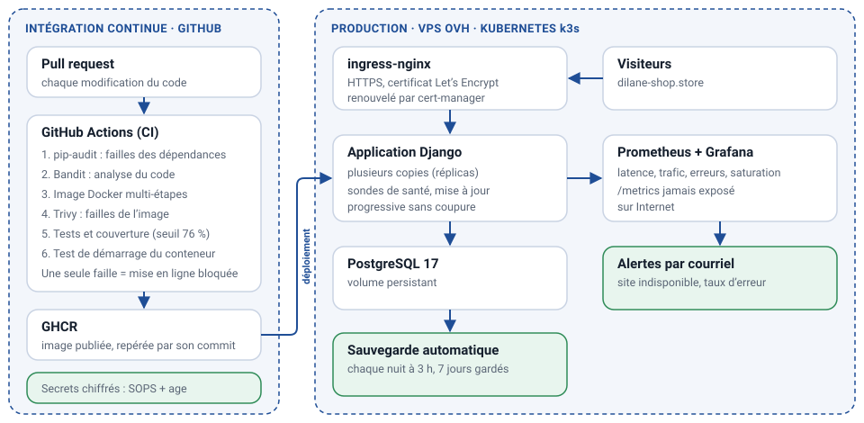
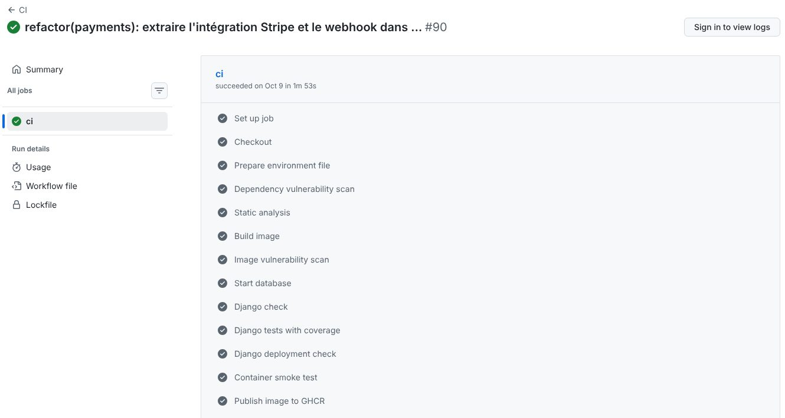
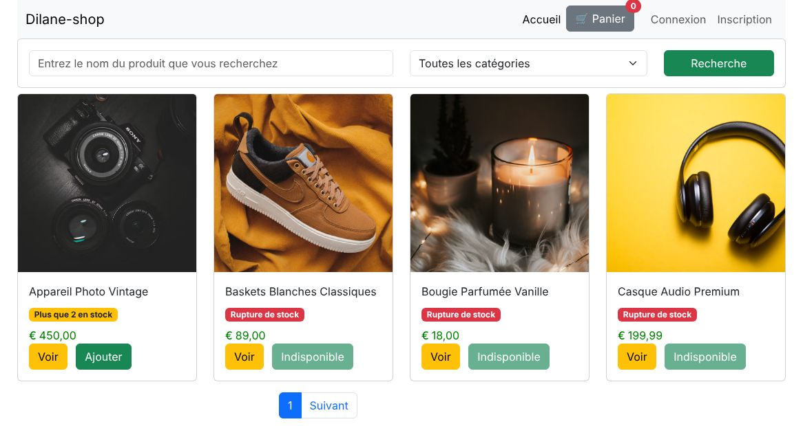
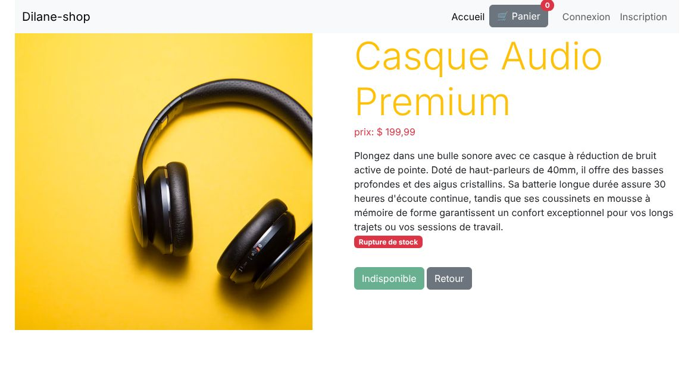
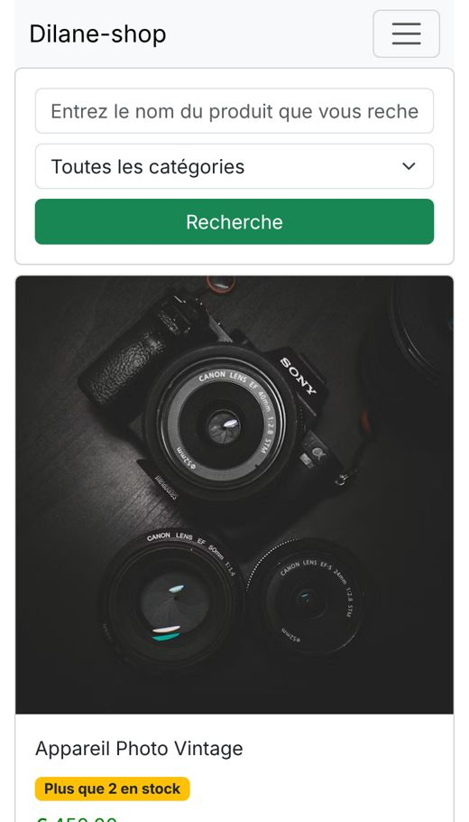

Étude de cas · infrastructure et DevSecOps
Dilane Shop
D’une boutique écrite en quatre jours à un service en production sur Kubernetes : chaque modification est analysée, testée, puis déployée sans coupure, et le site est supervisé et sauvegardé chaque nuit.
- 9 → 149tests automatiques
- 30failles connues corrigées dans les dépendances
- ~2 minpour analyser, tester et publier chaque modification
- Chaque nuitune sauvegarde de la base, 7 jours gardés
Situation
En avril 2026, j’ai écrit une boutique en ligne complète avec Django : catalogue, comptes, panier, paiement Stripe, gestion du stock. Elle tournait sur un seul serveur AWS EC2, avec sa base de données SQLite enregistrée dans le dépôt Git, sans conteneur, et seulement 9 tests.
Avant d’aller plus loin, j’ai fait l’audit de mon propre code : 40 points faibles, de la sécurité des paiements à l’absence de sauvegarde.
Tâche
Transformer ce prototype en un service qu’on peut confier à de vrais clients : reproductible sur n’importe quelle machine, vérifié à chaque modification, disponible sans coupure, surveillé et sauvegardé. Et tout documenter, pour que quelqu’un d’autre puisse le reprendre.
J’ai organisé le travail en sprints courts, chacun avec un objectif, des tickets GitHub et un bilan écrit.
Actions
- Conteneuriser. Une image Docker en plusieurs étapes, une base PostgreSQL séparée, le serveur Gunicorn. Le même conteneur tourne sur mon poste et en production.
- Orchestrer. Kubernetes, avec une configuration commune et deux variantes (Kustomize) : un cluster local pour tester, k3s en production. Plusieurs copies de l’application, des sondes de santé, des mises à jour progressives.
- Tester ce qui compte. Le webhook Stripe, seul code qui décrémente le stock, testé avec de vraies signatures ; le calcul de la TVA au centime près. La couverture est mesurée, et ne peut plus redescendre sous 76 % : la CI le refuse.
- Sécuriser la chaîne. Trois contrôles bloquants à chaque modification : les dépendances (pip-audit), le code (Bandit) et l’image Docker (Trivy). Le premier passage a trouvé 30 failles connues, corrigées avant d’activer le contrôle. Les secrets sont chiffrés dans le dépôt avec SOPS et age.
- Mettre en production. D’un serveur OVH nu jusqu’au site en HTTPS : k3s, ingress-nginx, certificat Let’s Encrypt renouvelé par cert-manager, image tirée de GHCR. Chaque étape est consignée pour pouvoir la rejouer.
- Surveiller et sauvegarder. Prometheus et Grafana mesurent les quatre signaux d’or (latence, trafic, erreurs, saturation), avec des alertes par courriel. Un test de charge (k6) pour les voir réagir. Une sauvegarde PostgreSQL chaque nuit à 3 h, sept jours gardés.
Résultats
- Le site est en production sur dilane-shop.store depuis fin septembre 2026.
- De 9 à 149 tests automatiques, et une couverture qui ne peut plus baisser.
- Aucune modification ne part en production avec une faille connue : la chaîne s’arrête d’elle-même.
- Une panne se voit dans Grafana et arrive par courriel, au lieu d’être découverte en visitant le site.
- Chaque choix important est expliqué dans un document de décision (ADR), et chaque sprint dans un bilan.
Ce que j’en retiens. En explorant Azure, trois commandes m’ont renvoyé des résultats parfaitement lisibles… et faux. Depuis, je vérifie un résultat par une deuxième source avant de m’y fier.
Architecture

En images



